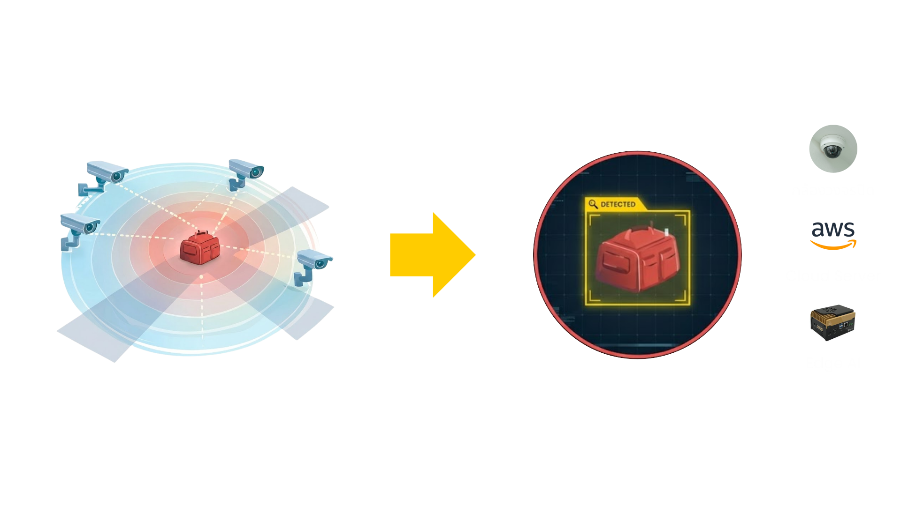
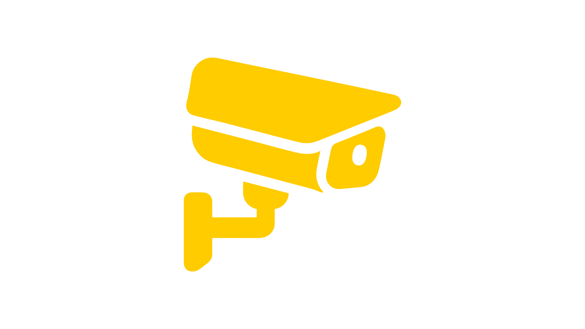
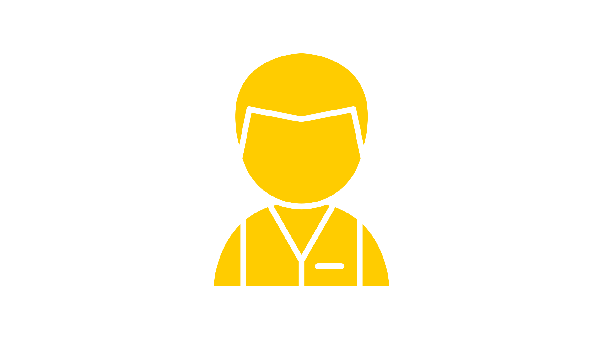
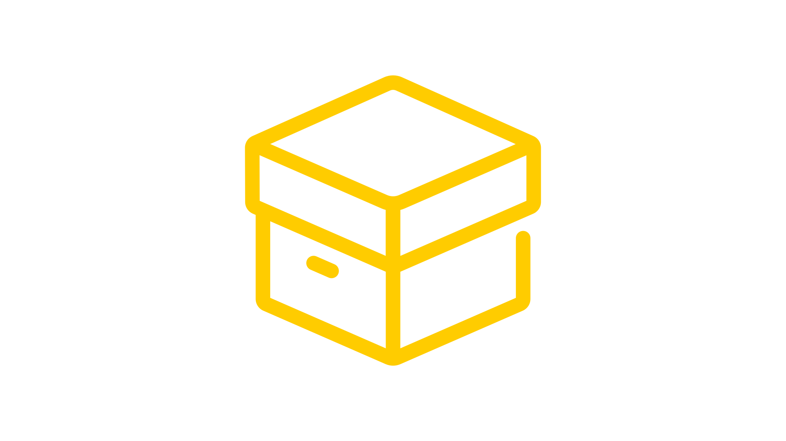
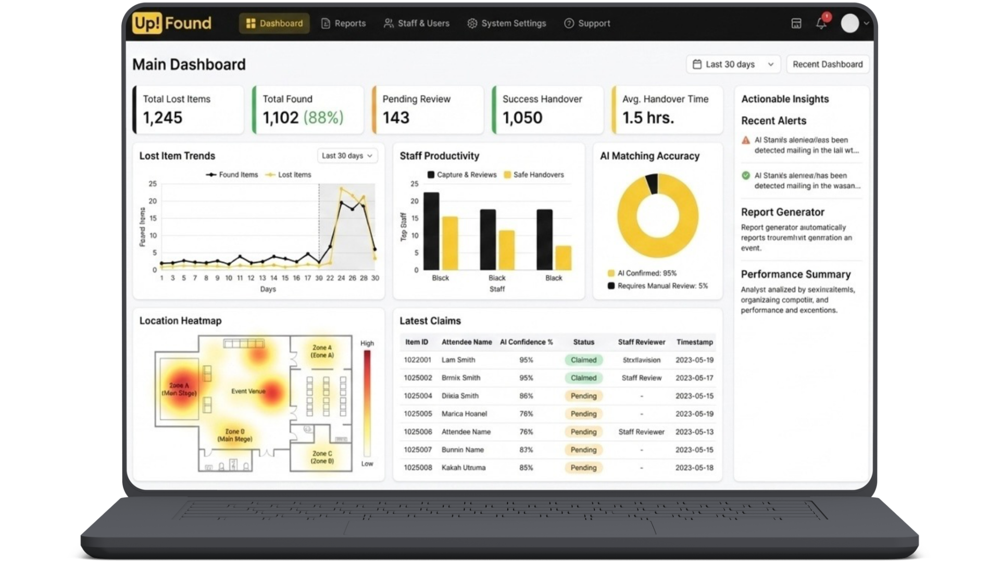
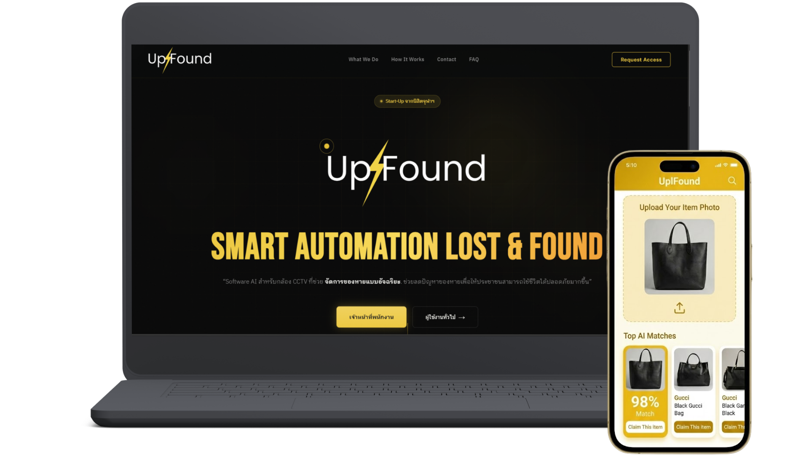

“AI software for CCTV cameras that intelligently manages lost items Helps reduce the problem of lost items so that people can live safer lives.”
Upfound connects intelligence to every layer of your operation — no rip-and-replace.




An AI system that transforms existing CCTV cameras to instantly detect and alert when items are left behind in an area helps detect items before they are discarded,

The system instantly records lost items to the dashboard upon AI detection, eliminating redundant administrative tasks, saving organizations money and reducing management time, leading to faster returns and preventing items from being discarded.
This web app allows users to check the status of lost items themselves, 24/7. It helps owners find their belongings within minutes, reducing the workload for staff and increasing the chances of recovering lost items without needing to purchase replacements.

Connecting to your CCTV cameras makes it easy to use and provides quick access.
Upfound is a smart AI system that learns from your data quickly, allowing it to adapt precisely to your specific needs.
Upfound provides valuable insights from your data, helping you make better decisions.
Upfound effectively reduces costs and optimizes budget and human resources.
Don't let lost items become a big deal. Join us today! :